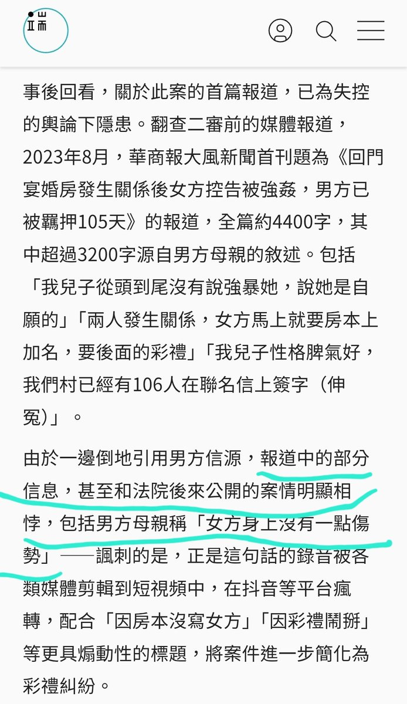

关于大同案,对于案件本身已经懒得评价了,但这事要是发生在香港被告母亲和一些媒体可能都要因妨碍司法公正进去,触犯原因如图一
根据香港立法会（立法會CB(2)2037/05-06(01)號文件）
7.妨礙司法公正的例子,包括...提供捏造的證據;發布文章刻意妨礙司法公正;...使原本可能得以提出檢控的法定程序受挫。
根据《刑事诉讼程序条例》101I
(5)凡任何人被裁定犯了普通法中妨礙司法公正的罪行,該人可在法院的酌情決定下,被處以任何刑期的監禁及任何款額的罰款,但上述監禁及罰款須受根據《區域法院條例》(第336章)或《裁判官條例》(第227章)該法院可依法判處的最高監禁刑期及最高罰款額的限制所規限。 (由2008年第10號第15條增補)
根据香港立法会（立法會CB(2)2037/05-06(01)號文件）
7.妨礙司法公正的例子,包括...提供捏造的證據;發布文章刻意妨礙司法公正;...使原本可能得以提出檢控的法定程序受挫。
根据《刑事诉讼程序条例》101I
(5)凡任何人被裁定犯了普通法中妨礙司法公正的罪行,該人可在法院的酌情決定下,被處以任何刑期的監禁及任何款額的罰款,但上述監禁及罰款須受根據《區域法院條例》(第336章)或《裁判官條例》(第227章)該法院可依法判處的最高監禁刑期及最高罰款額的限制所規限。 (由2008年第10號第15條增補)
